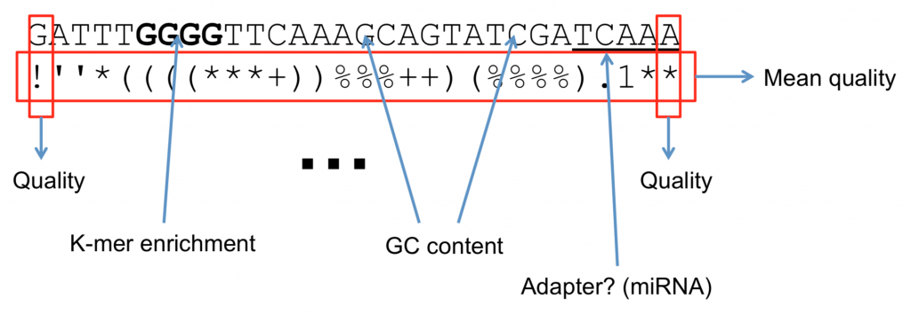

Quality scores
For more information on quality scores, see the Illumina technical note Quality Scores for Next-Generation Sequencing.
Every base in a FastQ read comes with a quality score. This is the sequencer’s estimate of how likely it is that the base was called incorrectly. Understanding quality scores is essential for judging how much you can trust your data.
The Phred scale
Quality scores are reported on the Phred scale. A Phred quality score Q is related to the probability P that the corresponding base is wrong by:
A higher score means a lower probability of error. Because the scores can range beyond the digits 0 to 9, each score is encoded as a single ASCII character so that it takes up exactly one space per base in the FastQ file.
There are two encodings you may encounter. The Sanger / Illumina
1.8+ encoding adds 33 to the score to get the ASCII character
(ASCII_BASE = 33). Older Illumina 1.3 to 1.7 data adds 64
instead (ASCII_BASE = 64). The table below lists both.
Q |
P (error prob.) |
ASCII (base 33) |
ASCII (base 64) |
|---|---|---|---|
0 |
1 |
|
|
1 |
0.79433 |
|
|
2 |
0.63096 |
|
|
3 |
0.50119 |
|
|
4 |
0.39811 |
|
|
5 |
0.31623 |
|
|
6 |
0.25119 |
|
|
7 |
0.19953 |
|
|
8 |
0.15849 |
|
|
9 |
0.12589 |
|
|
10 |
0.1 |
|
|
11 |
0.07943 |
|
|
12 |
0.0631 |
|
|
13 |
0.05012 |
|
|
14 |
0.03981 |
|
|
15 |
0.03162 |
|
|
16 |
0.02512 |
|
|
17 |
0.01995 |
|
|
18 |
0.01585 |
|
|
19 |
0.01259 |
|
|
20 |
0.01 |
|
|
21 |
0.00794 |
|
|
22 |
0.00631 |
|
|
23 |
0.00501 |
|
|
24 |
0.00398 |
|
|
25 |
0.00316 |
|
|
26 |
0.00251 |
|
|
27 |
0.002 |
|
|
28 |
0.00158 |
|
|
29 |
0.00126 |
|
|
30 |
0.001 |
|
|
31 |
7.94e-04 |
|
|
32 |
6.31e-04 |
|
` (backtick) |
33 |
5.01e-04 |
|
|
34 |
3.98e-04 |
|
|
35 |
3.16e-04 |
|
|
36 |
2.51e-04 |
|
|
37 |
2.00e-04 |
|
|
38 |
1.58e-04 |
|
|
39 |
1.26e-04 |
|
|
40 |
1.00e-04 |
|
|
41 |
7.94e-05 |
|
|
Reading accuracy
It is often easier to think about a quality score in terms of basecall accuracy rather than error probability:
Phred score |
Probability of incorrect call |
Basecall accuracy |
|---|---|---|
10 |
1 in 10 |
90% |
20 |
1 in 100 |
99% |
30 |
1 in 1,000 |
99.9% |
40 |
1 in 10,000 |
99.99% |
50 |
1 in 100,000 |
99.999% |
Putting it together
The figure below shows a FastQ read with its quality line annotated, so you can see how each ASCII character maps back to a score and therefore to a confidence in the basecall.
{kind=link}

An annotated FastQ read: each character on the quality line encodes the Phred score for the base directly above it.
What are quality scores good for?
Quality scores let you make informed decisions about your data. You can use them to trim low-quality bases from the ends of reads, to discard reads that are poor overall, and to weight basecalls during variant calling so that confident bases count for more than uncertain ones.
What software use quality scores?
Quality-aware tools are used at nearly every stage of analysis. FastQC summarizes the score distribution across a run, Trimmomatic trims on the basis of quality, and variant callers use the scores when deciding how much to trust each observed base.